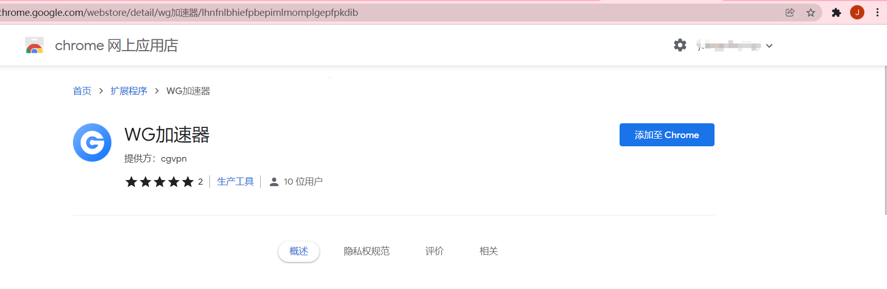
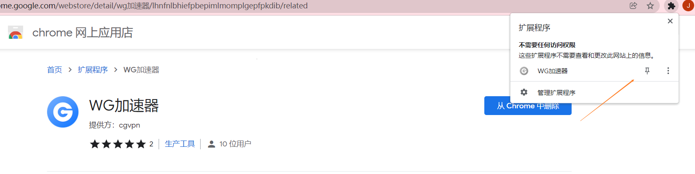
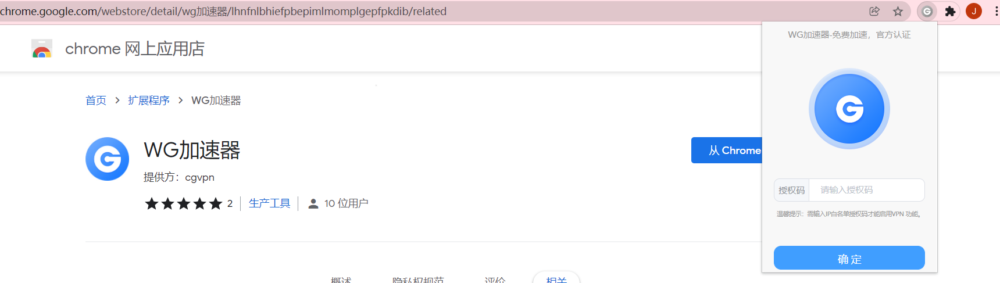
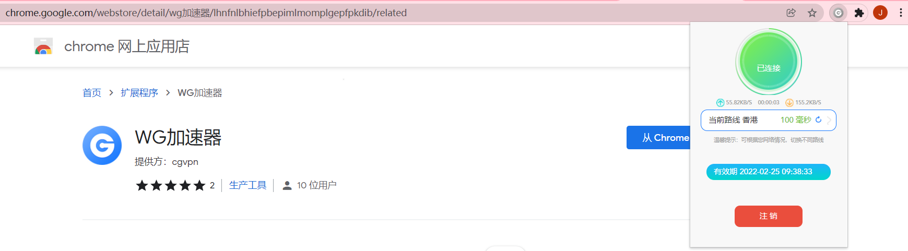
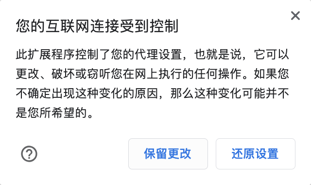
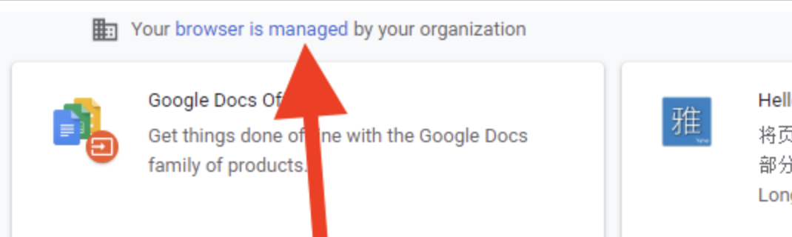
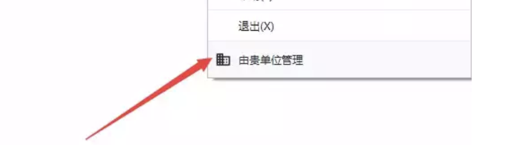
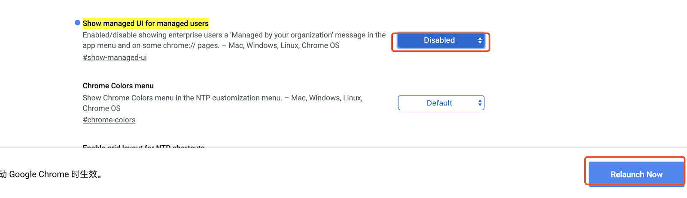

|
提示：仅支持 Chrome 浏览器和使用 Chrome 内核的 Edge 等浏览器 |
一、准备工作
1、安装 Chrome 浏览器（已安装请跳过）
确保您使用的是最新的Chrome浏览器，若未安装请点击下方按钮安装，若已有chrome浏览器可跳至第二步 安装Chrome 浏览器
二、安装 WG加速器
视频教程：后续更新！！！
1、在 Chrome 商店搜索 “WG加速器” 或者点击下面链接安装

2、点击Chrome 右上角安装好的 WG加速器 图标


3、使用生成的授权码（系统管理--IP白名单--浏览器授权码）登录，点击链接按钮，开启服务 
提示：Chrome扩展仅支持网页！！！
|
如遇以下问题解决方案： |
1.Chrome提示“您的互联网受到控制”怎么办
有时候 Chrome 会提示下面的弹框，主要是对用户使用代理的一种提示，因为 WG加速器是使用代理网络的技术，所以有时候也会弹出。
主要原因
- Chrome 浏览器为了提醒用户而做的提示

解决方案
- WG加速器 主要的作用是突破加速限制，并不会带来其他影响，所以点击 “保留更改” 即可，不用担心。
2.Chrome提示“由贵单位管理”无法使用
Chrome 官方的托管功能可以让单位和组织管理你的浏览器：如果 Chrome 处于托管状态，您的管理员便能设置或限制某些功能、安装应用、监控活动以及控制您对Chrome的使用方式。知乎上有一篇解释：https://www.zhihu.com/question/318527439 如果遇到这种情况可能会丢失代理权限，导致无法正常使用，如何解决呢，有两个办法
插件页面的提示

菜单的提示

一、新开一个用户
打开 Chrome 浏览器 -> 用户 -> 新建，再安装 WG加速器 插件即可。
二、禁用托管设置
浏览器输入 chrome://flags/#show-managed-ui，之后我们可以看到( 选项是否启用, 其应为 Disabled )，然后重新启动即可解除托管限制。
